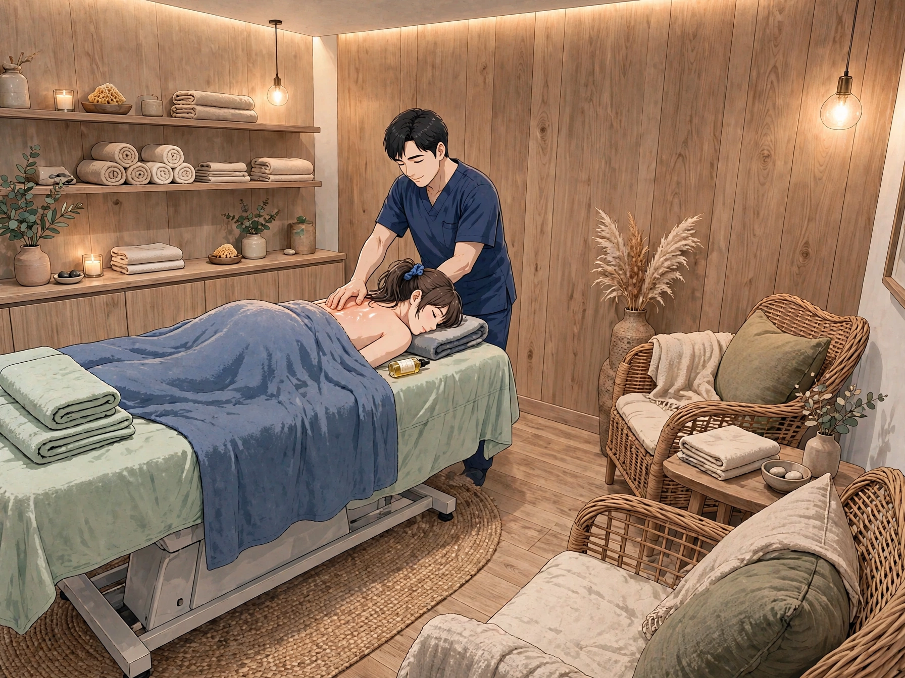

梅田でゴールデンウィークの行楽の後に気になる足の疲れ｜要因の整理とセルフケア、受診の目安ハウツー

連休のあと、梅田からの帰り道で足が重く感じることはありませんか。空中庭園展望台から大阪の街並みを眺め、グランフロント大阪の南北館を巡り、ホワイティうめだやディアモール大阪の地下街でお土産を探して歩き回る――そんな一日を過ごしたあと、家に着いて靴を脱ぐと、足の裏やふくらはぎのだるさにふと気づくことがあります。この記事では、梅田の行楽の一日を思い返しながら、足が疲れたように感じる場面、連休明けの過ごし方、自分でできる手入れ、病院に相談する目安を順に見ていきます。
#梅田 ゴールデンウィーク 足の疲れ#GW 行楽 足の疲れ#足の疲れ セルフケア#梅田 女性専用 サロン 足の疲れ
人によって違う、足の疲れのあらわれ方
夕方になると足が重く感じたり、朝起きたときに足の裏がこわばるように感じたり。「足の疲れ」とひとことで言っても、気になる時間帯も場所も人それぞれです。これは医学的な診断名ではなく、感じ方の呼び名です。ふくらはぎの重さが目立つ日もあれば、足の裏の張りや足首まわりのだるさが前に出る日もあります。当日の夜に気になることもあれば、翌日になってから気づくこともあります。まずは、どんなときに気になりやすいのか、自分のパターンを確かめてみましょう。
手がかりになるのは、ふだんの自分との違いです。行楽の前から気になっていたのか、梅田を歩いたあとから気になり始めたのか。どんな日のあとに重さを覚えやすいのか。そうした振り返りが、暮らし方の見直しにつながります。
梅田の一日が足にかける負担
普段との歩く量の違い
座って過ごすことが多い人にとって、連休の外出は歩く量が一気に増える一日です。スカイビルの展望台へ向かう階段とエスカレーター、グランフロント大阪の館内を渡り歩く移動、地下街の長い通路を進む時間。いずれも楽しいひとときですが、足から見れば、立ち続ける・歩き続ける時間がふだんよりずっと長くなります。こうして歩く量が急に増えた日は、足の重だるさを覚えやすい人もいます。
場所ごとに違う、足のかかり方
梅田の行楽では、立ち寄る場所によって足の使い方が変わります。スカイビルでは展望台への上り下りと、屋上の空中庭園をゆっくり歩く時間。グランフロント大阪では南北館を行き来しながら店をのぞき、立ち止まっては歩く、その繰り返し。ホワイティうめだやディアモール大阪の地下街では、人波をよけながら進むため歩く速さが安定しにくく、片方の足に負担が偏ることもあります。阪急梅田駅から中崎町まで足を延ばす日は、信号待ちや人混みでの足踏みが重なります。買い物袋が増えれば、片手で荷物を下げたまま歩く時間も長くなります。
靴と荷物の持ち方が左右するもの
出かけるときの靴も、足の感じ方を左右します。久しぶりに履く靴や買ったばかりの靴、かかとのある靴は、足になじむまで時間がかかることもあります。履き慣れていない靴で一日歩けば、足の裏やかかとが気になる人もいます。お土産や買い物袋が増えると重心が偏り、片方の足ばかりに負担がかかることもあります。荷物を両手に分ける、リュックに替えるといった工夫が役立つこともあります。
連休明けのリズムの戻し方
連休のあとに気になるのは、生活リズムの戻り方です。夜更かしが続いた連休のあと、朝早く起きて出勤する日は、体がまだ休みきれていないように感じる人もいます。連休中にたくさん歩いた足に、翌日から通勤の歩きが重なると、重だるさを覚えやすくなることもあります。連休明けは、予定を詰め込みすぎず、ゆとりを持たせるところから始めてみましょう。
行楽のあとの足の休ませ方
帰ってすぐ、足を休ませるひととき
家に着いたら、靴を脱いで足を休ませる時間をとりましょう。ソファに腰かけて足を少し高くする、横になって足を伸ばす。そうした短いひとときでもかまいません。足の裏を両手でやさしく押さえる、足指をゆっくりと広げる――それだけでもかまいません。痛みを感じるほど強く押す必要はありません。足が冷たく感じる日は、靴下を履き替えて温かくしておくのもよいでしょう。
ふくらはぎと足裏のやさしい手入れ
ふくらはぎは、歩くときに働く部分です。両手で下から上へ、軽くなでるようにさする。足首をゆっくりと回す。かかとを上げ下げする。こうした小さな動きを挟むと、足まわりの緊張がゆるみやすくなります。足の裏は、ゴルフボールほどの大きさのものを床に置き、軽く転がすのもひとつの方法です。強く踏みつけず、心地よいと感じる程度に留めましょう。
湯船で温めて、眠る時間を確保する
連休のあとは、眠る時間を意識して確保することも大切です。寝る前は寝室を少し温め、足元が冷えないよう靴下や薄手の毛布を用意しておくと安心です。湯船に入るときは、ぬるめのお湯に足首まで、できればひざ下までつかって体を温めるのもよいでしょう。湯船のなかで足指をゆっくり動かす、足首を回す。こうした小さな動きが、体を温める手助けになることもあります。
翌日と連休明け初日の歩き方
重だるさが翌日まで残っている日は、歩く速さをゆるめる工夫をしてみましょう。エスカレーターやエレベーターを使う、地下街の混雑した通路を避けて少し遠回りの通路を選ぶ、荷物を減らして出かける。こうした小さな工夫も取り入れやすいものです。連休明けの初日は、無理のない予定を心がけ、休む時間を意識的に入れておきましょう。
気になる変化が重なったときの相談先
足の疲れに、気になる変化が重なってきたら、早めに医療機関へ相談しましょう。たとえば足の腫れや痛み、しびれ、皮膚の色の変化、歩くときの痛みが長引くとき。そんなサインがあるときは、ひとりで抱え込まず、整形外科などに相談するのが安心です。
重さが長引き、日々の手入れを続けても変わらない場合も、医療機関への相談を考えてみましょう。診察で伝えたいのは、いつ感じたか（行楽の当日・翌日・連休明け）、どんな重さか、どこが気になるか、いつから続いているか、連休中の過ごし方。書き留めておくと、診察のときに話しやすくなります。
当店のご案内
ステラポラリスは女性専用・完全予約制のサロンで、大阪・梅田エリアのレンタルサロンで施術しています。開院は2026年11月4日。営業時間は月〜土の17:00〜22:00で、日曜はお休みです。施術内容はオイルマッサージ、美容整体の2つ。料金は90分10,000円。予約はLINEから受け付けています。
場所は大阪市北区堂山町12-5 ロイヤルハイツ梅田Ⅱ 303号室（レンタルサロンACE内）。中崎町駅から徒歩5分、阪急梅田駅から徒歩8分です。担当は施術歴30年・鍼灸師資格を持つセラピスト1名で、当店では鍼灸施術は行いません。